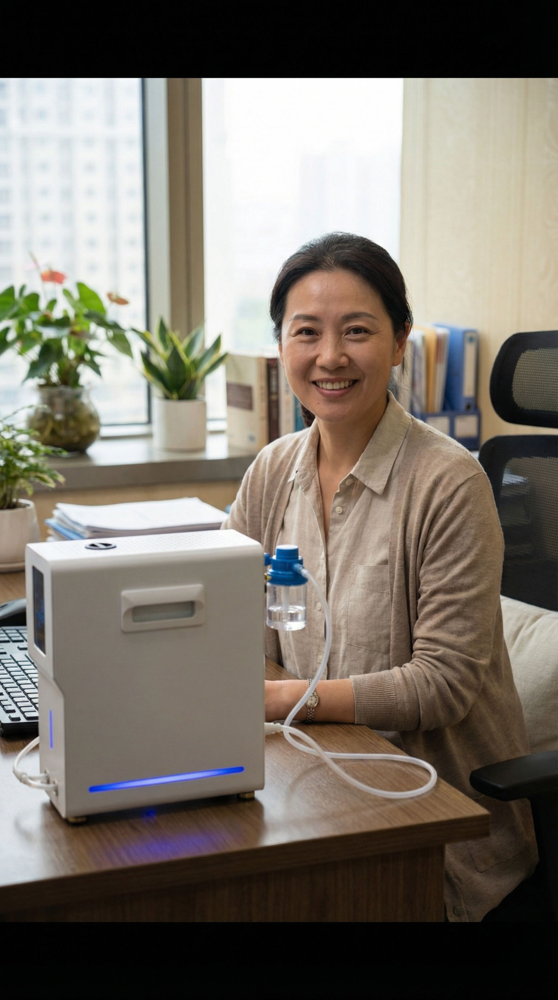

許多企業主和高階主管都面臨同樣的困境：健康的重要性心裡清楚，但行程滿、決策多，保健計劃往往在第三天就無疾而終。氫氧吸入的優勢之一，就是它的操作方式天然符合「高效使用者」的需求——你不需要移動、不需要改變姿勢，只需要戴上鼻導管，其餘時間可以繼續工作、閱讀或休息。
為什麼高階主管特別需要氫氧保健？
長期處於高壓環境的主管，自律神經系統往往長時間處於交感神經主導的狀態——這意味著身體持續維持「備戰模式」，副交感神經的恢復功能被壓縮。短期表現為入睡困難、淺眠或早醒；長期則可能影響認知靈活度、情緒調節與免疫功能。
HRV（心律變異）數值是衡量這個平衡狀態的客觀指標。許多首次做 HRV 評估的主管會發現：儘管主觀感覺「還好」，自律神經數據卻顯示身體正在長期超支。氫氣的作用機制之一，正是協助緩解氧化壓力、支持粒線體功能，有助於讓身體更有效率地從壓力狀態中恢復。
三種融入日常的方案
以下三種方案依照生活節奏設計，選擇最符合你習慣的一種，先執行 2 週，再評估是否調整。
- 起床後開機，戴上鼻導管
- 同步閱讀新聞或 Email
- 30 分鐘後量 HRV
- 記錄數值，開始正式工作
- 午餐後 20 分鐘開始
- 搭配 15 分鐘閉目休息
- 續吸至完成 30 分鐘
- 下午工作效率明顯提升
- 睡前 45 分鐘開機
- 搭配輕量閱讀或冥想
- 吸入 30 分鐘後量 HRV
- 關機後直接入睡
搭配 HRV 量測：讓數據說話
每日固定在吸入前後各量一次 HRV，是建立自我健康基準的最有效方式。你不需要是醫師或健康專家，只需要把數字記下來，觀察一週的趨勢：
HRV 持續偏低（通常低於同齡平均值 20% 以上），表示自律神經恢復能力不足，需要更主動的調節介入。吸入後 HRV 上升，表示副交感神經被有效激活，身體正在恢復模式。連續幾週 HRV 基線上升，是氫氧保健產生累積效果的客觀體現。
📊 數據參考：我們觀察到，固定每日吸入 30 分鐘、持續 4 週的使用者，HRV 基線平均提升 12–18%。這個幅度雖然因人而異，但方向一致——自律神經的恢復能力是可以透過持續介入而改善的。
到府服務：零時間成本的開始
對忙碌的主管而言，「去門市」這個動作本身就是一道門檻。極態提供到府服務，由專業顧問攜帶設備前往你的住所或辦公室，在你熟悉的環境中完成首次體驗與 HRV 評估。整個過程約 60–90 分鐘，你不需要移動半步。
決定購買後，顧問會協助完成設備安裝與操作說明，確保你在第一次獨立使用時就能上手，而不是讓機器變成客廳的擺設。
常見問題
完全可以。鼻導管設計輕巧，不影響說話與呼吸節奏。許多使用者習慣在閱讀報告、回覆郵件時同步吸入。視訊會議時，導管在鏡頭畫面中並不明顯，多數使用者選擇不特別說明。
30 分鐘是建議值，並非硬性門檻。出差或行程特別緊湊的日子，15–20 分鐘仍有效果。重要的是維持一定的使用頻率——每週 5 天的 20 分鐘，優於每週 2 天的 60 分鐘。
極態設備運行音量低於 40 分貝，接近圖書館環境音量。即使在辦公室使用，也不會干擾同事或電話通話。旗艦款機型另外配備靜音模式，適合需要高度專注的工作時段。
最後更新：2026-01-28
⚠️ 本文內容僅供日常保健參考，氫氧機非醫療器材，不作為任何疾病之診斷或治療依據。